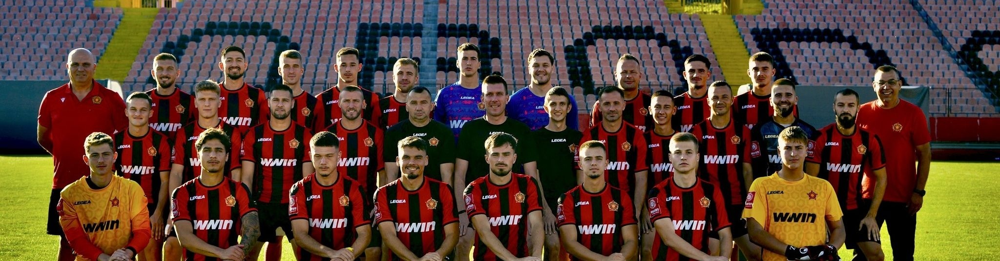
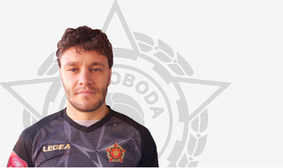
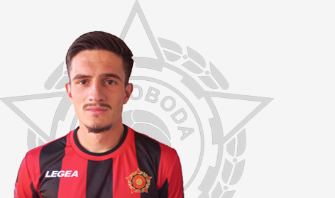
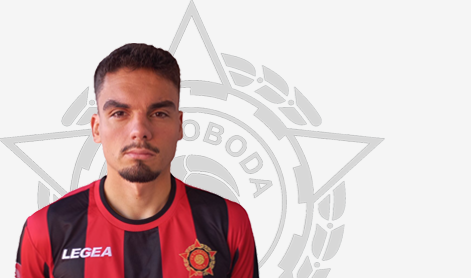
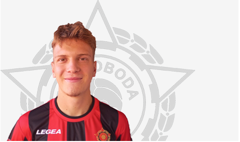
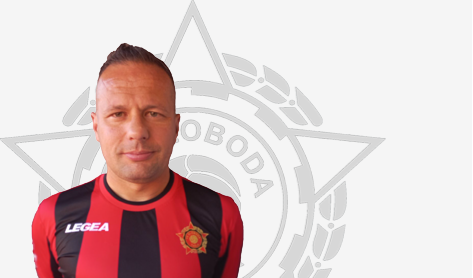
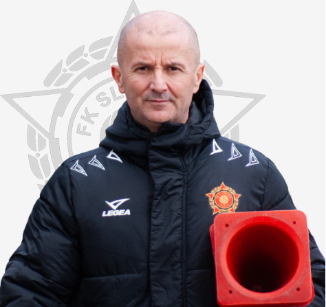

Golman

Štoper

Desni back

Vezni red

Napadač

Šef stručnog štaba
Fudbalski klub Sloboda Tuzla jedan je od najstarijih i najuglednijih sportskih kolektiva u Bosni i Hercegovini. Osnovan je davne 1919. godine pod imenom Gorki, u čast velikog ruskog pisca Maksima Gorkog. Zbog svog izraženog radničkog i antifašističkog opredjeljenja, klub je brzo postao trn u oku tadašnjim vlastima, zbog čega mu je rad 1924. godine zabranjen.
Nakon zabrane, ljubav prema fudbalu u Tuzli nije ugašena. Ubrzo se klub ponovo rađa, ovaj put pod imenom Sloboda, imenom koje s ponosom nosi i danas. Kroz svoju dugu historiju, Sloboda je postala istinski simbol grada na zrnu soli, a njene crveno-crne boje predstavljaju radnički ponos, rudarsku tradiciju i prkos ovog kraja.
Najveće uspjehe klub je počeo nizati krajem 60-ih i tokom 70-ih godina prošlog vijeka. Izgradnjom legendarnog Stadiona Tušanj (čija je izgradnja počela 1957. godine), Sloboda je dobila svoj dom. Klub je godinama bio izuzetno stabilan i poštovan prvoligaš u jakoj Prvoj ligi bivše Jugoslavije, a 1971. godine generacija predvođena velikanima igrala je i finale Kupa maršala Tita.
↑ Skoči na vrh| IME I PREZIME | POZICIJA | PERIOD IGRANJA | BROJ NASTUPA (CCA) |
|---|---|---|---|
| Mustafa Hukić (Huka) | Vezni igrač | 1968 - 1978. | 281 |
| Dževad Šećerbegović | Napadač | 1974 - 1983. | 334 |
| Rizah Mešković (Mate) | Golman | 1968 - 1973. | 120 |
| Mersed Kovačević | Napadač | 1973 - 1984. | 148 |
| Fahrudin Omerović | Golman | 1980 - 1984. | 94 |